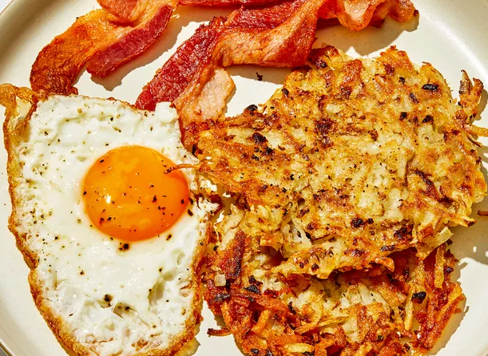

Homemade Crispy Hash Browns

Description
Good, old-fashioned, restaurant-style hash browns. Perfect with hot pepper sauce and ketchup!
2 medium russet potatoes, shredded
½ medium onion, finely chopped
1 cup oil for frying, or as needed
Derections
- Gather all ingredients.
- Rinse shredded potatoes until water is clear, then drain and squeeze dry.
- Place shreds in a bowl and mix in the onion, flour, and egg until evenly distributed.
- Heat about 1/4 inch of oil in a large heavy skillet over medium-high heat. When oil is sizzling hot, place potatoes into the pan in a 1/2 inch thick layer.
Cover the whole bottom of the pan, or make separate piles like pancakes.
-
Cook until nicely browned on the bottom, then flip over and brown on the other side. It should take at least 5 minutes per side. If you are cooking them in one big piece,
it can be cut into quarters for easier flipping.
- Remove from pan, and drain on paper towels.
Season with salt and pepper and serve immediately.
- Serve hot and enjoy!
Done
